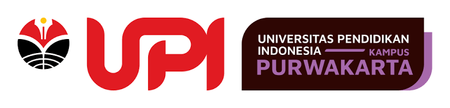
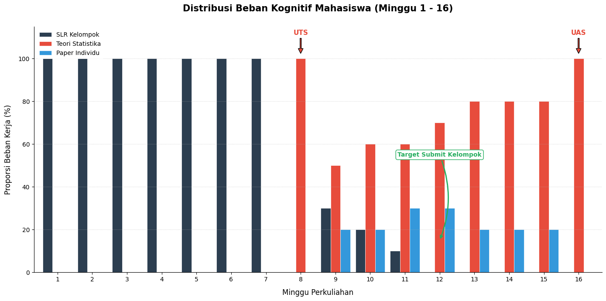
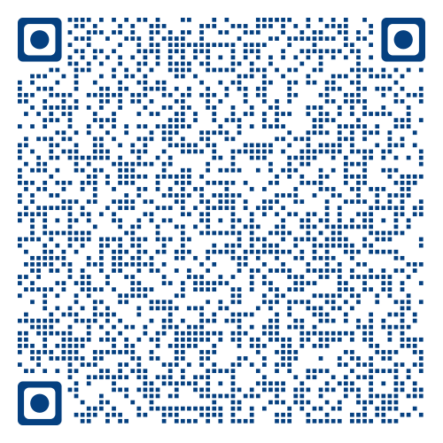
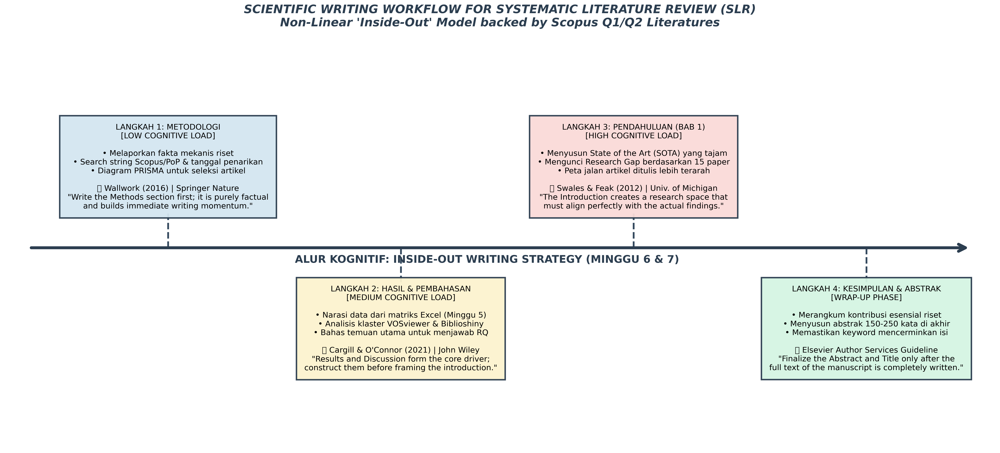

Mata Kuliah Metodologi Penelitian 2 | PSTI
Presented by M. Akda Barri

Fokus 6 minggu ke depan: 100% Manuskrip Kelompok (Garis Biru Tua).

[SALAH]: Siswa, Mengajar, Nilai bagus.
[BENAR]: Siswa SMK Kelas X (P), Media Game 3D (I) vs Ceramah (C), Peningkatan Skor Computational Thinking (O), di Purwakarta (C).
"Pengaruh Chatbot terhadap kemauan belajar"
Manakah bagian PICOC yang HILANG dari judul di atas?
Jawaban: Populasi (Siapa subjeknya?) dan Comparison (Dibandingkan dengan apa?)
Logika Boolean (The Magic Formula):
("Artificial Intelligence" OR "Generative AI") AND "Programming"
Ubah angka jadi visual riset standar:
Jika ingin mencari artikel tentang penggunaan VR (Virtual Reality) ATAU AR (Augmented Reality) dalam ujian Matematika, rumus Boolean apa yang benar?
("Virtual Reality" OR "Augmented Reality") AND "Mathematics"
TARGET HARI INI:
Pembersihan Data Sebelum Dibagi:
Sebelum membagi baris, seluruh anggota kelompok wajib menyaring 10 sampai 20 baris pertama bersama-sama dalam satu meja.
Tujuan: Menyamakan standar pemahaman kriteria inklusi dan eksklusi.
Bagi rata sisa baris data (contoh: 800 baris dibagi 4 orang = 200 baris per orang).
Dilarang mengeksekusi zona milik anggota lain untuk menjaga integritas data.
Setiap anggota mengeksekusi blok barisnya masing-masing secara fokus.
Gunakan filter kolom. Hapus tahun di bawah 2020 dan dokumen non-jurnal (Book, Chapter, Editorial, Review).
Baca hanya kolom judul. Buang artikel yang melenceng dari domain Sistem Informasi atau Pendidikan.
Contoh: IoT untuk peternakan sapi langsung tandai Buang (Out of Scope).
Baca kalimat pertama (tujuan) dan kalimat terakhir (hasil). Buang jika berupa review literatur lain atau wacana konsep.
Jika naskah utuh tidak dapat diakses gratis atau via kampus, tandai: Reports Not Retrieved.
Buka PDF yang lolos. Periksa bab Methods dan Results. Pastikan partisipan autentik dan instrumen evaluasi empiris terbukti jelas.
Target Korpus: 15 sampai 25 Paper Emas
Audit Uji Petik 10 Persen:
Kelompok menemukan artikel tahun 2023 yang sangat relevan tentang Game Edukasi, tetapi untuk mengunduh PDF diminta membayar $39.95.
Apa tindakan yang sah menurut protokol PRISMA 2020?
Tandai Buang (Eksklusi). Tulis alasan: Full-Text Paywalled / Not Retrieved. Peneliti tidak diwajibkan membeli naskah komersial di luar repositori yang tersedia.
Budi (2023) meneliti AR di biologi. Hasilnya motivasi naik. Alex (2024) membuat game 3D dengan skor SUS 85 tapi berat.
(Membaca menyamping per jurnal. Dilarang keras untuk jurnal Q1!)
(Membaca vertikal antar konsep. Mudah untuk disintesis!)
DILARANG menyalin paragraf utuh ke dalam sel. Ekstrak data mentahnya saja.
| Kode/Penulis | Subjek (P) | Teknologi (I) | Variabel (O) | Hasil Angka | Limitasi (Celah) |
|---|---|---|---|---|---|
| Poulsen et al. (2025) | 201 Mhs UIUC | Proof Blocks | Skor Post-test | Kelompok Blocks skor tertinggi (64,1%) | Waktu pengerjaan lambat, p=0,43 |
| Oh & Park (2026) | 251 Pengguna GenAI | Generative AI | Problem-Solving | Information overload memicu penghindaran | Belum diuji khusus Mhs Informatika |
The Master Vault & Jigsaw Execution:
Sebelum merajut naskah, pastikan Excel kalian berstandar seperti ini (Penuh Fakta, Bukan Narasi Panjang):
| Penulis (Tahun) | Subjek (P) | Teknologi (I) | Variabel (O) | Hasil Angka Utama | Limitasi (Celah Riset) |
|---|---|---|---|---|---|
| Poulsen et al. (2025) | 201 Mhs Ilmu Komputer UIUC | Proof Blocks (Drag-and-Drop) | Durasi & Skor Post-test | Book & Blocks skor tertinggi (64,1%), durasi 5x lebih lama. | Peningkatan tidak signifikan (p=0,43); Topik induksi matematika saja. |
| Usmeldi et al. (2026) | 100 Siswa SMK Negeri Sumbar | AR (Unity) & Inkuiri Terbimbing | Berpikir Kritis & Literasi Digital | Critical Thinking naik (Pre: 66, Post: 72); Digital Literacy naik (Pre: 64.5, Post: 73). | Desain one-group (tanpa kontrol); Intervensi singkat (4 sesi). |
| Oh & Park (2026) | 251 Pengguna GenAI (Korea) | Generative AI (ChatGPT/LLM) | Problem-Solving & Info Overload | Info overload memicu penghindaran (β=0,737). Literasi AI naikkan problem-solving (β=0,386). | Survei subjektif; Belum diuji empiris pada Mhs Informatika di Indonesia. |
Ilmuwan menulis berdasarkan fakta yang sudah diekstrak.
HARI INI DILARANG ADA YANG MENGETIK BAB 1 (PENDAHULUAN)!
Kita akan merakit Bab 2 (Metode) dan Bab 3 (Hasil).

Dilarang keras mengetik kurung dan nama sitasi secara manual. Tidak ada yang boleh mengetik tulisan "(Poulsen, 2025)" dari keyboard!
Langkah Eksekusi Hari Ini:
Ganti teks di dalam kurung siku [...] dengan data riil kalian.
2. Metodologi
2.1. Protokol Pencarian dan Strategi Identifikasi
Tinjauan literatur ini disusun dengan mematuhi pedoman pelaporan PRISMA 2020 (Page et al., 2021). Identifikasi literatur primer dieksekusi secara terstruktur pada September 2026 melalui basis data akademik terkemuka, yakni [Sebutkan Database, misal: Scopus dan Dimensions]. Pencarian diatur menggunakan kombinasi operator Boolean yang ketat, yaitu: ["KATA KUNCI 1" AND ("KATA KUNCI 2" OR "SINONIM 2")].
2.2. Kriteria Inklusi dan Eksklusi
Guna menjaga relevansi dan validitas korpus data, peneliti menetapkan serangkaian kriteria kelayakan yang ketat pada Tabel 1.
Tabel 1. Kriteria Inklusi dan Eksklusi Pustaka
| Parameter | Kriteria Inklusi (Diterima) | Kriteria Eksklusi (Ditolak) |
|---|---|---|
| Rentang Tahun | [Tahun Awal] hingga [Tahun Akhir] | Dipublikasikan sebelum tahun [Tahun Awal] |
| Jenis Dokumen | Artikel Jurnal Primer / Empiris | Review Paper, Buku, Prosiding, Opini |
| Populasi/Konteks | [Sebutkan target P kalian, misal: Vokasi/SMK] | Selain [Sebutkan P] (misal: Subjek medis/SD) |
| Akses & Bahasa | Berbahasa Inggris & Full-Text Tersedia | Bahasa non-Inggris & Terhalang Paywall |
2.3. Ekstraksi Data dan Pemilihan Studi
Pencarian awal pada basis data menghasilkan total [Angka Total Awal] dokumen. Melalui proses penyusutan dan deduplikasi berbantuan perangkat lunak manajemen referensi, sebanyak [Angka Duplikat] artikel ganda dihapus. Penapisan lapis pertama berbasis analisis judul dan abstrak mengeksklusi [Angka Dibuang] naskah karena melenceng dari konteks penelitian (out of scope).
Pada tahap akhir, sisa [Angka Sisa Lapis Kedua] naskah utuh dievaluasi kelayakannya secara independen berdasarkan kriteria kelayakan. Secara kumulatif, tinjauan sistematis ini mempertahankan [Angka Korpus Final, misal: 25] artikel jurnal utama yang diekstraksi ke dalam matriks sintesis data. Pemetaan penyusutan aliran naskah divisualisasikan pada Gambar 1.
[INSERT: GAMBAR DIAGRAM PRISMA 2020 DI SINI]
Gambar 1. Diagram Alir Pemilihan Studi (PRISMA 2020)
Jangan membaca baris per baris. Bacalah tabel Excel per kolom!
Lalu jahit dengan urutan berikut:
3. Hasil dan Pembahasan
3.1. Pemetaan Bibliometrik dan Tren Literatur
Evaluasi bibliometrik terhadap [Angka Final] literatur utama mengungkap dinamika publikasi terkait [Topik Utama Kalian]. Sebagaimana divisualisasikan pada Gambar 2, kluster penelitian didominasi oleh kata kunci [Sebutkan Kata Kunci Terbesar] dan [Kata Kunci Kedua]. Analisis tren menunjukkan lonjakan minat akademik pada isu ini di tahun [Tahun Puncak].
[INSERT: GAMBAR VOSVIEWER / BIBLIOSHINY DI SINI]
Gambar 2. Peta Jaringan Kluster Kata Kunci Literatur
3.2. Karakteristik Demografi dan Intervensi Teknologi
*(Sintesis Kolom Populasi dan Teknologi dari Excel)*
Analisis terhadap subjek eksperimen dari literatur yang ditinjau menunjukkan kecenderungan yang kuat. Mayoritas studi (sebesar [X]%) mengimplementasikan intervensi pada demografi [Sebutkan Mayoritas Subjek, misal: mahasiswa S1] (Sitasi A; Sitasi B). Secara teknis, dominasi intervensi bertumpu pada platform [Teknologi Dominan], sementara adopsi [Teknologi Minoritas] masih bersifat eksploratif (Sitasi C).
3.3. Evaluasi Dampak terhadap Kinerja (Outcome)
*(Sintesis Kolom Hasil Angka dan Limitasi menggunakan pola Z-Weaving)*
Tinjauan literatur secara konsisten membuktikan bahwa intervensi [Teknologi Kalian] memberikan determinasi positif terhadap [Variabel Kalian]. Sejalan dengan temuan (Sitasi D), kelompok eksperimen mencatat lonjakan skor signifikan dibandingkan metode konvensional. Penyelidikan paralel oleh (Sitasi E) memvalidasi tren ini dengan akurasi mencapai [Angka].
Namun demikian, peningkatan efikasi ini rupanya bukan tanpa syarat. Berbeda dengan klaim keberhasilan sebelumnya, temuan (Sitasi F) secara kontras menegaskan bahwa korelasi positif tersebut gagal direplikasi secara stabil apabila [Sebutkan Syarat dari Limitasi Excel, misal: beban kognitif tidak diukur]. Matriks sintesis ini mengekspos celah bahwa tanpa perancah pedagogis yang matang, intervensi [Teknologi] rawan memicu [Sebutkan Dampak Buruk dari Limitasi Excel] (Sitasi G).
Karena isi tubuh (Bab 3) sudah kalian kuasai, menulis Bab 1 dan 4 akan sangat mudah hari ini.
Tepat pada menit ke-140 hari ini, folder pengumpulan tugas akan DIKUNCI MUTLAK.
Pastikan tata letak, sitasi (Mendeley/Zotero), dan bahasa sudah dirapikan. File .docx inilah yang akan kalian uji menggunakan sistem evaluasi pasca-UTS nanti!